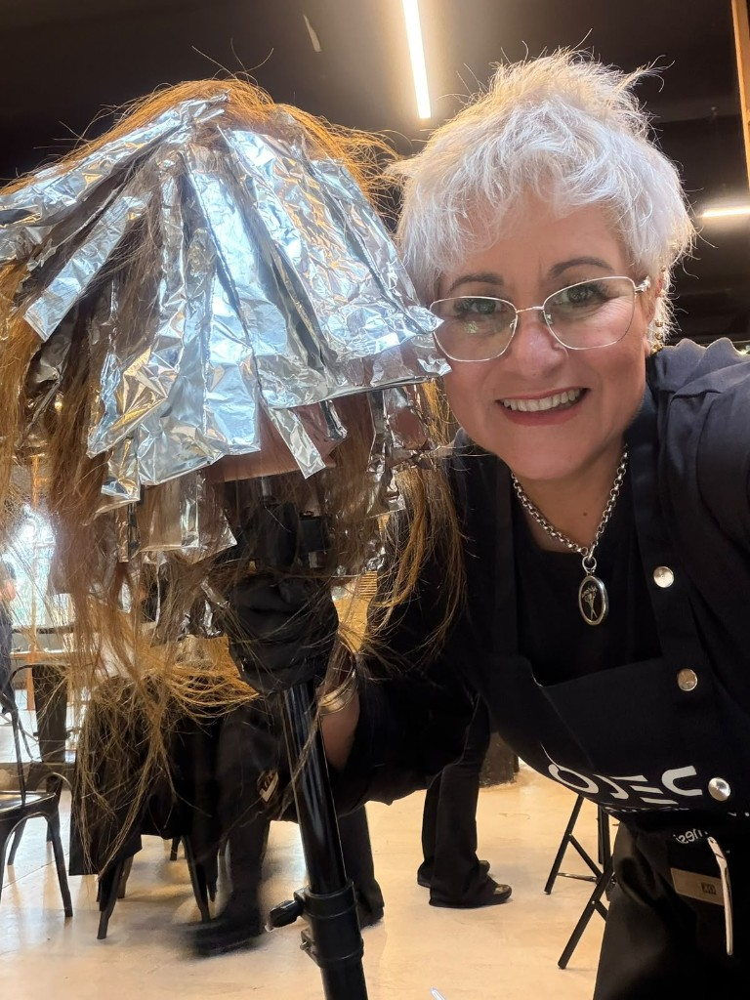
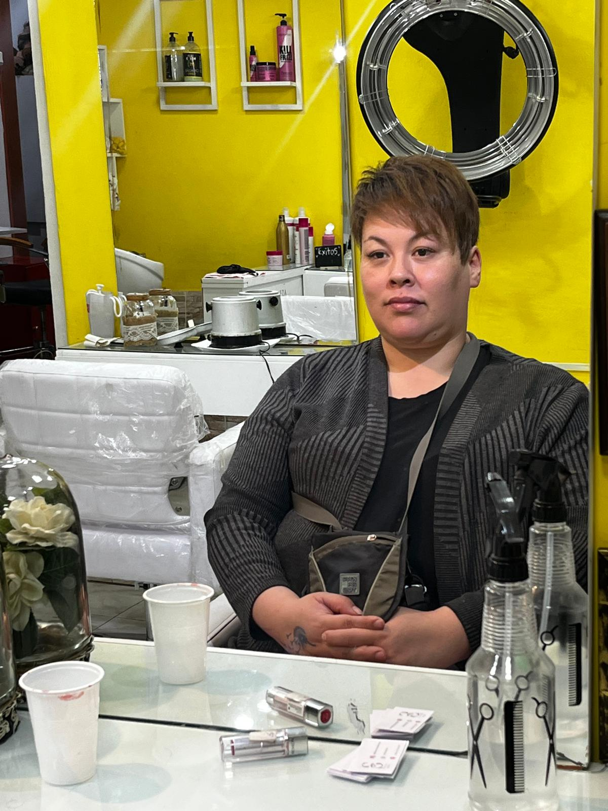
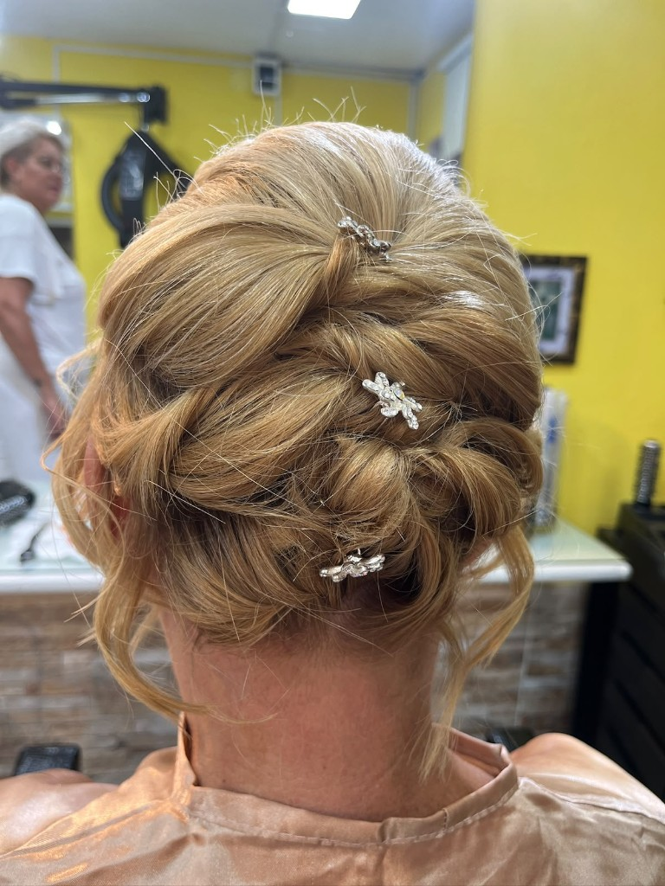
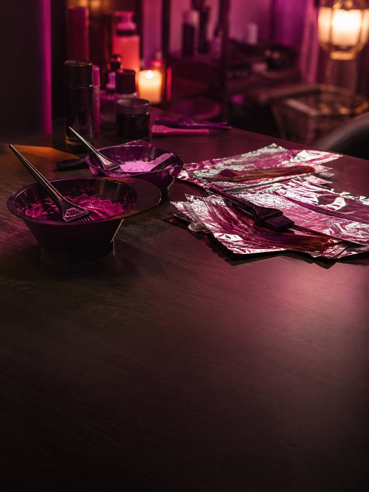
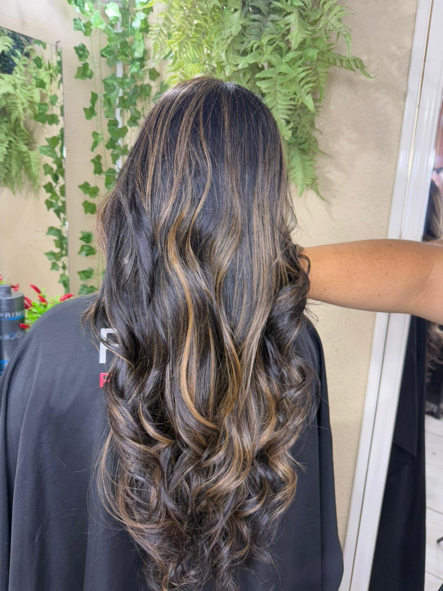
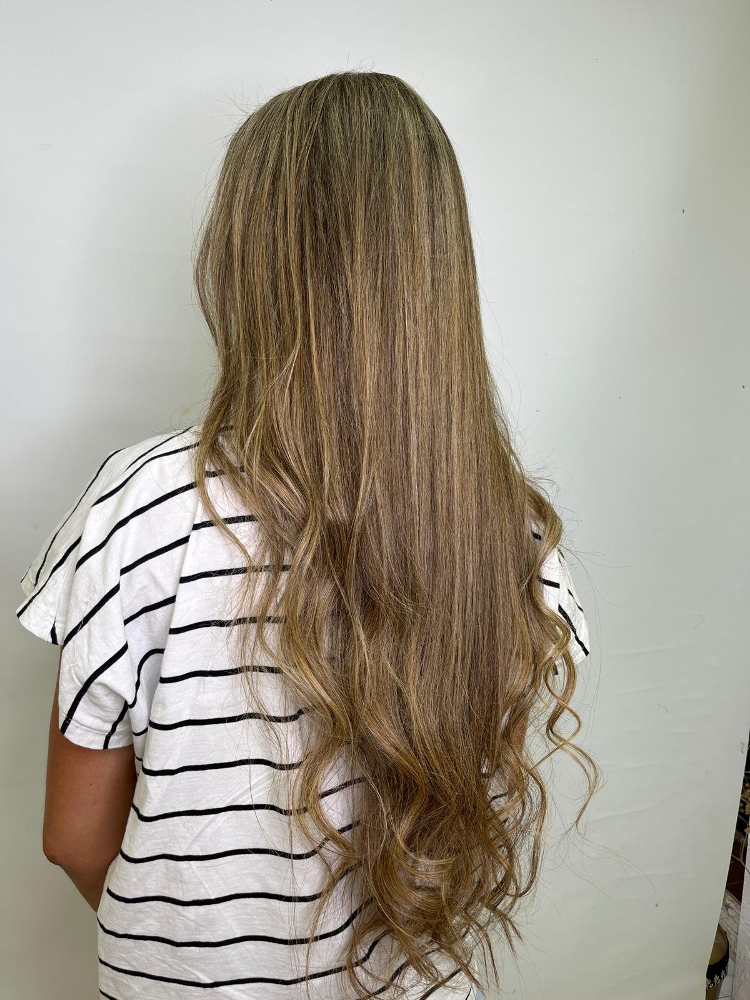
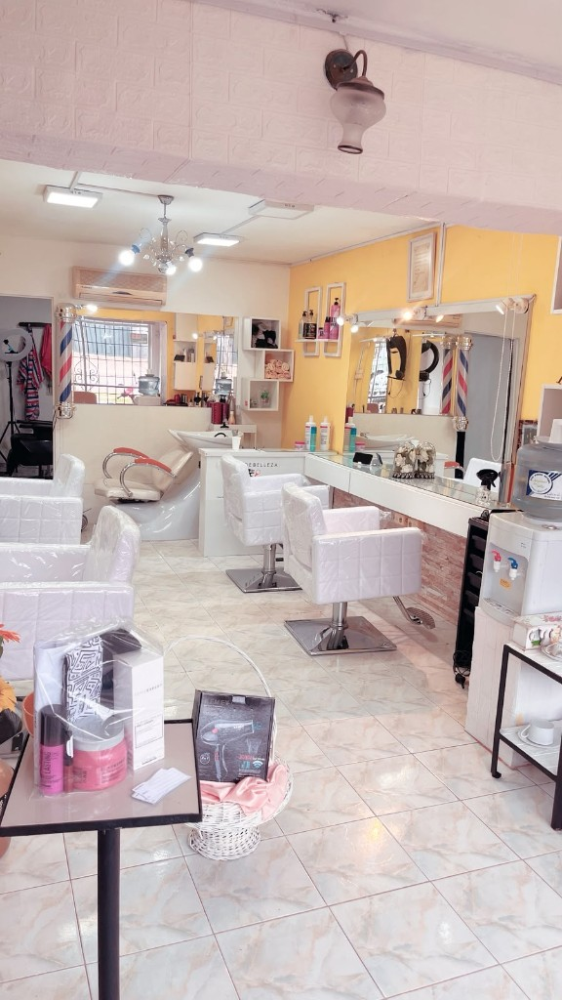
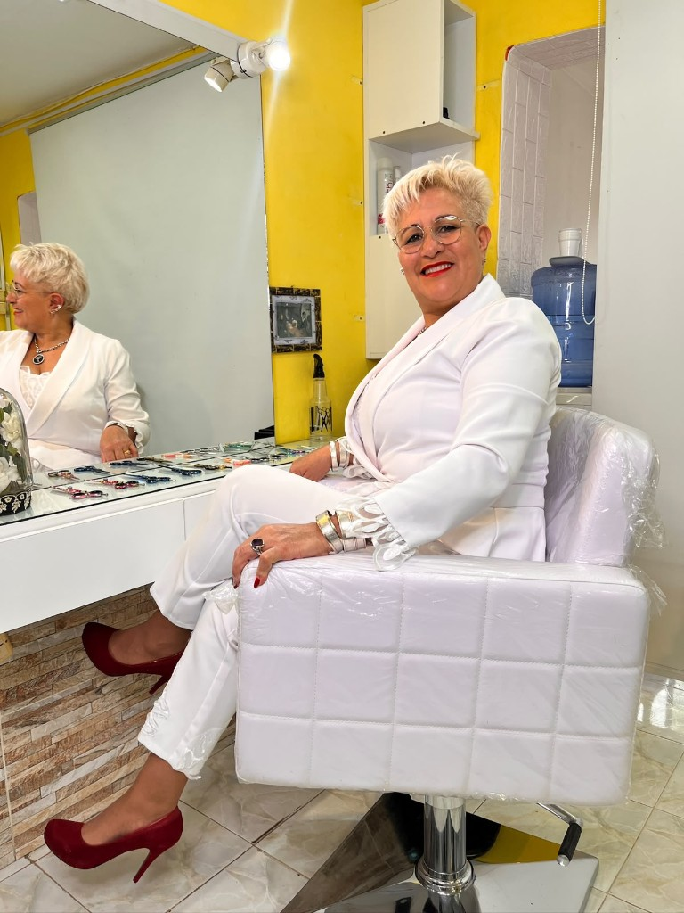
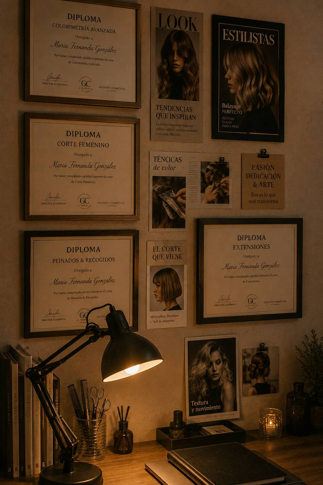

01
Colorimetría & Balayage
Color a medida para tu tono de piel y tu estilo — mechas, balayage, tonalizantes y retoque de raíz.
Colorista y Master Internacional. 37 años de oficio, técnica precisa y el trato cercano de siempre.


Adriana Machado es colorista y estilista con el título de Master Internacional. Dirige su salón en Salto desde hace más de tres décadas, formándose de manera constante para traer técnicas actuales de colorimetría sin perder el trato cercano que la distingue.
Hoy conduce un equipo bajo el mismo estándar de excelencia y comparte su oficio como docente en su instituto de formación.
Color, corte, tratamientos y peinados de fiesta — cada servicio nace de un diagnóstico real de tu cabello.

Color a medida para tu tono de piel y tu estilo — mechas, balayage, tonalizantes y retoque de raíz.
Cortes que enmarcan tu rostro y peinados para el día a día, hechos a tu medida.
Alisados orgánicos y tratamientos de brillo y nutrición para devolverle vida al cabello.

Peinados de fiesta con prueba previa incluida, para llegar a tu día sin sorpresas.
Cursos de colorimetría y estilismo dictados por Adriana, para quienes quieren vivir de esto.
Clases con técnica real, de la mano de 37 años de oficio. Adriana forma a la próxima generación de estilistas con la misma exigencia que pone en cada clienta.

Más de tres décadas dedicadas a la colorimetría y el estilismo capilar.
Título de Master Internacional y actualización constante en técnicas nuevas.
Cada servicio empieza con un diagnóstico real — no con una fórmula genérica.
El ambiente donde suceden las transformaciones — cálido, cuidado al detalle, pensado para que te sientas en casa.






Escribinos por Instagram para consultar disponibilidad, contarnos qué querés hacerte y coordinar el mejor horario.